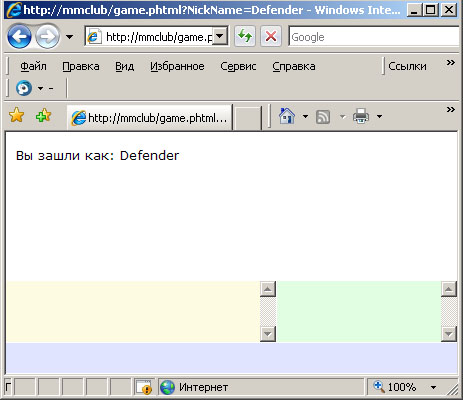
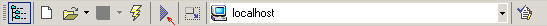
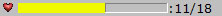
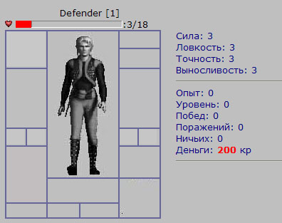
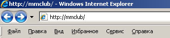
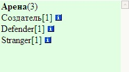
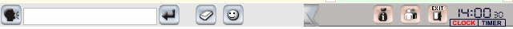
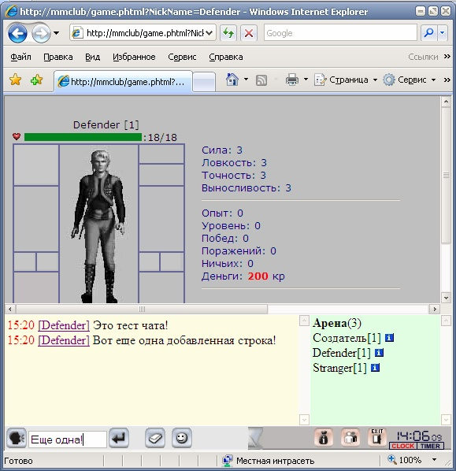

|
Курсы
Регистрация
Методика
Оглавление
Для учащихся

Статьи
Инструменты
Контакты
|
Урок
3.
Основной экран игры
3.1.
Главный фрейм и слагающие его
элементы.
Как большинство браузерных игр наподобие
Бойцовского Клуба, наша игра будет строится из фреймов, каждый из которых должен
содержать необходимые для полноценной игры страницы. В некоторых фреймах будут
находится постоянные страницы, такие как - чат, комната игрока и т.д. , в
основном же фрейме (назовем его main) -
информационная страница будет меняться в зависимости от
того, что в данный момент происходит с игроком. Фрейм main
будет содержать у нас и страницу с характеристиками нашего
персонажа, и Центральную площадь, и содержимое рюкзака, и страницу с поединком,
и различного род магазины в игре и т.д.
Приведем ниже HTML код нашей главной
игровой страницы, открыть которую после удачной авторизации мы еще пытались в
нашем втором уроке. Тогда это был простой файл с одной строкой, сейчас же мы
должны реализовать работающую страницу. Итак вот он наш файл game.phtml.
<html>
<?php
if
(!empty($_GET['NickName'])){
$aNickName = $_GET['NickName'];
print( '<frameset
rows="62%, *, 30, 0" FRAMEBORDER="0" BORDER="0" FRAMESPACING="1">' );
print( '<frame
name="main" src="char.phtml?NickName='.$aNickName.'">'
);
print( '<frameset
cols="*,180">' );
print( '<frame
name="chat" src="chat.html"
target="_top" scrolling=YES FRAMEBORDER="0" BORDER="0" FRAMESPACING="0"
MARGINWIDTH="3" MARGINHEIGHT="3">' );
print( '<frame
name="online" src="room.html"
target="_blank" scrolling=YES FRAMEBORDER=0 BORDER=0 FRAMESPACING=0
MARGINWIDTH=3 MARGINHEIGHT=0>' );
print(
'</frameset>' );
print( '<frame
name="bottom" scrolling="no" noresize src="buttons.html">'
);
print( '<frame
name="refreshed" target="_top" scrolling="no" noresize src="refreshed.html">'
);
print( '</frameset>' );
}
else
{
// На стартовую
print( '<SCRIPT>top.location.href="index.phtml";</SCRIPT>'
);
}
?>
</html> |
Как видно из кода, мы здесь при помощи функции PHP print
просто выводим описание структуры фреймов прямо в окно браузера. Наша игра
слагается из следующих фреймов: main - который в
данном случае содержит в себе страницу char.phtml с
отображением характеристик нашего персонажа, chat
- содержит страницу чата chat.html, online -
содержит в себе страницу перечня всех игроков, находящихся с
нашим игроком в одной комнате room.html, bottom
- содержит в себе страницу управления игрой buttons.html
и, наконец, refreshed - некий служебный
фрейм.
Как вы успели заметить, если мы передали в нашу
главную страницу NickName авторизовавшегося игрока, то
PHP код создаст нам структуру фреймов, если нет -
переадресует нас на стартовую страницу игры (index.phtml)
Более того
NickName передается также во фрейм main,
а вернее в содержащуюся в нем в данный момент страницу нашего
героя (char.phtml), что
реализовано следующей строкой кода: :
print(
'<frame name="main" src="char.phtml?NickName='.$aNickName.'">'
);
Пока что практически все страницы, входящие во фреймы пусты и при авторизации,
мы увидим следующую картину:

Даже для того, чтоб отобразить надпись "Вы зашли как Defender"
нам нужно приложить кое-какие усилия. Во-первых
зарегистрироваться в игре под этим ником, либо создать его в нашем скриптовом
SQL файле.
Чтоб сразу определиться, где у нас что находится, скажем, что страничка белого
цвета - это наш main фрейм, страничка салатного
цвета - это наш фрейм, содержащий перечень игроков в комнате, желтый -
зарезервирован под чат, а голубоватый - для страницы управления игрой.
Чтоб вывести строку "Вы зашли как Defender"
наш файл char.phtml должен содержать следующий PHP
код:
<?php
if (!empty($_GET['NickName'])){
$aNickName = $_GET['NickName'];
}
print('Вы
зашли как: '.$aNickName);
?> |
Объяснять этот
код, думается нет смысла. Все вышеперечисленные странички вы можете найти
здесь. Большинство из них пока пусты, но мы вскоре начнем их
создавать.
3.2.
Страница
действия (наш персонаж).
Наступил момент сделать более информативную страницу с характеристиками нашего
персонажа. Как вы уже знаете - это страница char.phtml.
Что же мы планируем там отображать?
Во-первых: картинку нашего героя.
Во-вторых: слоты для экипировки и оружия.
В-третьих: информацию о характеристиках (сила, ловкость,
интеллект, запасе денег, количестве побед и поражений и т.д.)
В-четвертых: полоску здоровья нашего героя.
Отрисовка картинки нашего персонажа с пустыми слотами не должна
вызвать у нас затруднений и на языке разметки HTML
реализуется обычными таблицами. Но перед этим давайте чуть расширим нашу с вами
таблицу users в скриптовом SQL
файле. К уже используемым нами полям мы добавим еще:
/*Таблица персонажей*/
CREATE TABLE `users` (
ID bigint(20)
unsigned NOT NULL auto_increment,
Nick_Name CHAR(32) UNIQUE,
User_Pass CHAR(32),
SessionID bigint,
User_EMail CHAR(64) UNIQUE,
Security_Answer CHAR(30),
Full_Name CHAR(50),
User_Birth_Day DATE NOT NULL,
Character_Birth_Day DATE NOT NULL,
User_Gender SMALLINT(1),
User_City CHAR(32),
ICQ_Number CHAR(16),
Character_Money INT DEFAULT 200, /*деньги*/
Character_Strength INT DEFAULT 3, /*сила персонажа*/
Character_Strength_Total INT DEFAULT 3, /*сила персонажа c учетом
вещей*/
Character_Endurance INT DEFAULT 3, /*Выносливость (Здоровье=Выносливость*5)*/
Character_Accuracy INT DEFAULT 3,/*Точность перса (влияет на
крит.удар)*/
Character_Accuracy_Total INT DEFAULT 0, /*Точность с уч. вещей
перса*/
Character_Dexterity INT DEFAULT 3, /*Ловкость перса (влияет на
уворот)*/
Character_Dexterity_Total INT DEFAULT 0, /*Ловкость перса с уч.
вещей*/
Character_Sword INT DEFAULT 0, /*Мастерство владения мечом*/
Character_Spear INT DEFAULT 0, /*Мастерство владения копьем*/
Character_Axe INT DEFAULT 0, /*Мастерство владения Топором*/
Character_Mace INT DEFAULT 0, /*Мастерство владения Молот,Дубина*/
Character_Dagger INT DEFAULT 0, /*Мастерство владения Ножом*/
Character_CurHealth INT DEFAULT 0, /*тек здоровье во время боя*/
Character_MaxHealth INT DEFAULT 20, /*Максимальное здоровье с
учетом вещей*/
Character_Level INT DEFAULT 0, /*УРОВЕНЬ ИГРОКА*/
Character_Experience INT DEFAULT 0, /*ОПЫТ ИГРОКА*/
Character_NextExperience INT DEFAULT 10, /*Следующая граничная
точка опыта*/
Character_UnUsed_Points INT DEFAULT 3, /*Неиспользованные очки
для распределения в статы (сила, ловкость....)*/
Town INT DEFAULT 0 REFERENCES Towns(`ID`), /*Текущий город перса*/
Building INT DEFAULT 0 REFERENCES Buildings(`ID`), /*текущее
положение перса в городе (здание, площадь)*/
Moving_Type INT DEFAULT 0 REFERENCES MovingTypes(`ID`), /*текущее
транспортное средство (корабль, карета)*/
EndMoving_Time DATETIME DEFAULT 'Now' NOT NULL, /*время прибытия
в Пункт Назначения*/
Character_Disposition INT DEFAULT 0 REFERENCES Dispositions(`ID`),
/*склонность перса*/
Character_Clan INT DEFAULT 0 REFERENCES Clans(`ID`), /*клан перса*/
Character_Image CHAR(30) DEFAULT 'standart1.gif', /*изображения
перса*/
Character_MaxWeigth INT DEFAULT 20, /*максимальный вес предметов
в рюкзаке*/
Helmet_Slot INT DEFAULT 0, /*слот шлема*/
Shield_Slot INT DEFAULT 0, /*слот щита*/
Weapon_Slot INT DEFAULT 0, /*слот оружия*/
Gloves_Slot INT DEFAULT 0, /*слот перчаток*/
Shoes_Slot INT DEFAULT 0, /*слот обуви*/
Armor_Slot INT DEFAULT 0, /*слот брони*/
Necklace_Slot INT DEFAULT 0, /*слот ожерелья*/
Ring1_Slot INT DEFAULT 0, /*слот 1 кольца*/
Ring2_Slot INT DEFAULT 0, /*слот 2 кольца*/
Ring3_Slot INT DEFAULT 0, /*слот 3 кольца*/
Ring4_Slot INT DEFAULT 0, /*слот 4 кольца*/
Ear_Slot INT DEFAULT 0, /*слот серег*/
Belt_Slot INT DEFAULT 0, /*слот пояса*/
PRIMARY KEY (`ID`)
) ENGINE=MyISAM DEFAULT CHARSET=cp1251; |
Те поля, которые
уже содержались в таблице users мы оставили голубым
цветом, остальные вместе с комментариями добавили ниже. Пока что нам понадобится
далеко не все поля.
Более того, чтоб каждый раз после сборки скрипта в EMS MySQL Managere
нам не приходилось регистрироваться, давайте сразу введем в игру
парочку персонажей:
INSERT INTO
users (Nick_Name,
User_Pass,
Character_Money,
Character_Level,
User_Birth_Day)
VALUES('Создатель','1234','500','1','2008-03-11');
INSERT INTO
users (Nick_Name,
User_Pass,
Character_Money,
Character_Level,
User_Birth_Day)
VALUES('Defender','1234','200','1','2008-03-11');
INSERT INTO
users (Nick_Name,
User_Pass,
Character_Money,
Character_Level,
User_Birth_Day)
VALUES('Stranger','1234','200','1','2008-03-11');
|
Добавим эти
строки также в наш скрипт mmclub.sql - в котором
мы накапливаем наш MySQL код. Весь файл
mmclub.sql целиком Вы можете взять
здесь.
Выполните его,

нажав на треугольник или воспользовавшись клавишей F9.
После этого - у нас появились поля в таблице users,
которые отвечают за деньги, характеристики игрока, содержимое
слотов и многие другие параметры.
Картинки для пока еще пустых слотов (тех ячеек таблицы, где будут содержаться
игровые предметы нашего героя) Вы можете увидеть тут.
Теперь мы вполне сможем сделать таблицу (<table>)
на HTML для отображения слотов и
характеристик нашего героя:
<table
border="1" width="183" height="228" cellspacing="0" cellpadding="0"
bgcolor="#BFBFBF" bordercolor="#666699">
<tr>
<td width="27" height="32" rowspan="2" colspan="2" valign="top"><img src="items\helmet_empty.jpg"></td>
<td width="99" height="176" rowspan="5" valign="top" colspan="2"><img
border="0" name = "mainimage" src="items/pers.jpg"></td>
<td width="49" height="23" colspan="2" valign="top"><img src="items\ear_empty.jpg"></td>
</tr>
<tr>
<td width="49" height="2" colspan="2" valign="top"><img src="items\necklace_empty.jpg"></td>
</tr>
<tr>
<td width="27" height="80" colspan="2" valign="top"><img src="items\weapon_empty.jpg"></td>
<td width="49" height="80" colspan="2" valign="top"><img src="items\shield_empty.jpg"></td>
</tr>
<tr>
<td width="1" height="24" valign="top"><img src="items\ring_empty.jpg"></td>
<td width="25" height="24" valign="top"><img src="items\ring_empty.jpg"></td>
<td width="22" height="24" valign="top"><img src="items\ring_empty.jpg"></td>
<td width="26" height="24" valign="top"><img src="items\ring_empty.jpg"></td>
</tr>
<tr>
<td width="27" height="77" colspan="2" rowspan="2" valign="top"><img src="items\armor_empty.jpg"></td>
<td width="49" height="40" colspan="2" valign="top"><img src="items\gloves_empty.jpg"></td>
</tr>
<tr>
<td width="99" height="34" valign="top" colspan="2"> </td>
<td width="49" height="31" colspan="2" valign="top" rowspan="2"><img src="items\shoes_empty.jpg"></td>
</tr>
<tr>
<td width="27" height="1" colspan="2" valign="top"><img src="items\belt_empty.jpg"></td>
<td width="44" height="3" valign="top"> </td>
<td width="53" height="3" valign="top"> </td>
</tr>
</table>
|
Итак, пока у нас
в ячейках таблицы только картинки пустых слотов (helmet_empty.jpg
-пустая картинка шлема,
shield_empty.jpg
- пустая картинка щита
и т.д.)
Остальные характеристики тоже можно вывести:
<td
width="252" height="1" valign="top"><font color="#000080">
Сила: <?php
echo "$aStrength";
?><br>
Ловкость: <?php
echo
"$aDexterity"; ?><br>
Точность: <?php
echo
"$aAccuracy"; ?><br>
Выносливость: <?php
echo
"$aEndurance"; ?><br>
<HR>
Опыт: 0 <br>
Уровень: 0<br>
Побед: 0 <br>
Поражений: 0<br>
Ничьих: 0<br>
Деньги: </font><b><font color="#FF0000"><?php
echo
"$aMoney"; ?> </font></b> <font color="#000080">кр<br>
<HR>
<p> </font>
</td> |
Еще мы намеревались сделать полоску жизни нашего героя, которая должна выглядеть
примерно так:

Когда у героя мало здоровья ( например 2 из 18) полоска должна быть красной,
если в районе половины (т.е. порядка 11/18, как на рисунке) - полоска будет у
нас желтой, если здоровье почти восстановилось - полоска становится зеленой.
Чтоб реализовать полоску, которая будет стремиться к полному
здоровью персонажа и еще и менять цвет, простым HTML
кодом не отделаешься и нам придется воспользоваться языком JavaScript.
Полоска реализуется также при помощи HTML
таблиц и картинок соответствующих цветов:
<!--
Тут размещено здоровье персонажа -->
<td width="238">
<table cellspacing=0 cellpadding=0 border="0" bordercolor="#000080"><tr><td>
<NOBR><div id=HP>
<IMG SRC="items/herz.gif" ALT="Уровень жизни"> <IMG SRC=1silver.gif
WIDTH=1 HEIGHT=10 ALT="Уровень жизни" name=HP1><IMG
SRC=1silver.gif WIDTH=1 HEIGHT=10 ALT="Уровень жизни" name=HP2>:</div>
</nobr>
</table>
<!-- Конец Секции--> |
Теперь приведем
функции на JavaScript, которые будут реализовывать
отображение здоровья персонажа, если текущие очки жизни его отличаются от
максимальных (т.е к примеру 11/18)
<SCRIPT>
var delay = 2; // задержка изменения очков здоровья
var redHP = 0.33; // меньше 30% красный цвет
var yellowHP = 0.66; // меньше 60% желтый цвет, иначе зеленый
var TimerOn = -1; // id таймера
var tkHP, maxHP;
var speed=100;
var mspeed=100;
//-- Смена
хитпоинтов (очков здоровья) со
временем
function setHP(value, max, newspeed) {
tkHP=value; maxHP=max;
if (TimerOn>=0) {
clearTimeout(TimerOn);
TimerOn=-1; }
speed=newspeed;
setHPlocal();
}
function setHPlocal() {
if (tkHP>maxHP) { tkHP=maxHP; }
var sz1 = Math.round((149/maxHP)*tkHP);
var sz2 = 150 - sz1;
if (document.all("HP")) {
document.HP1.width=sz1;
document.HP2.width=sz2;
if (tkHP/maxHP < redHP) { document.HP1.src='items/1red.gif';
}
else {
if (tkHP/maxHP < yellowHP) { document.HP1.src='items/1yellow.gif';
}
else { document.HP1.src='items/1green.gif';
}
}
var s = document.all("HP").innerHTML;
document.all("HP").innerHTML = s.substring(0, s.lastIndexOf(':')+1)
+ Math.round(tkHP)+"/"+maxHP;
}
tkHP = (tkHP+(maxHP/100)*speed/1000);
if (tkHP<maxHP) { TimerOn=setTimeout('setHPlocal()',
delay*100); }
else { TimerOn=-1;
}
}
</SCRIPT>
|
Первый вызов функции мы должны сделать в теге <body>
нашей веб-странички в событии onLoad. А дальше все уже
будет работать автоматически под управлением таймера (как вы знаете в
JavaScript функции таймера это -
setTimeout
и clearTimeout)
Работает все это предельно просто, несмотря на
кажущийся громоздкий код. Наши JavaScript функции (setHP
и
setHPlocal)
должны знать сколько текущих очков здоровья у нашего героя (tkHP)
и их максимальное количество (maxHP).
и вычислить размер полоски по ширине для отображения текущего здоровья. Полная
полоска у нас задана размеров 150 пикселей. Значит по пропорции (var
sz1 = Math.round((149/maxHP)*tkHP);)
- определит нам размер текущей полоски здоровья и (var
sz2 = 150 - sz1;) - это
оставшаяся до максимального значения здоровья полоска. HP1
и HP2 - как вы догадались это имена наших
картинок, чей размер мы изменяем (document.HP1.width=sz1;
и
document.HP2.width=sz2;)
по событию таймера. В результате визуально получается эффект
ползущей вправо полоски "заживления" нашего героя.
Кроме полоски мы еще пишем через "слэш" текущее и полное
здоровье персонажа цифрами: (document.all("HP").innerHTML
= s.substring(0, s.lastIndexOf(':')+1) + Math.round(tkHP)+"/"+maxHP;)
Остается вопрос, как же нашей функции на
JavaScript, которая работает на стороне браузера на клиентской
машине игрока, узнать - сколько здоровья у персонажа, которое хранится в
поле Character_CurHealth в нашей таблице
users в базе данных mmclub на
стороне сервера? А очень просто - мы передаем ее во встроенном куске кода на
PHP, предварительно прочитав и все другие
необходимые параметры игрока для отображения на странице char.phtml.
<?php
if (!empty($_GET['NickName'])){
$aNickName = $_GET['NickName'];
$aWhatStat = "";
$aWhatSkill = "";
// Узнаем
характеристики персонажа
$mysql_host = "localhost";
$mysql_user = "root";
$mysql_password = "";
$my_database = "mmclub";
$link =
mysql_connect($mysql_host,
$mysql_user, $mysql_password)
or die("Could
not connect : " .
mysql_error());
mysql_select_db($my_database)
or die("Could
not select database");
$query = "SELECT *
FROM users WHERE Nick_Name='$aNickName'";
$result =
mysql_query($query)
or die("Query failed : " .
mysql_error());
$aRow =
mysql_fetch_array(
$result);
$aStrength = $aRow["Character_Strength"];
$aEndurance = $aRow["Character_Endurance"];
$aAccuracy = $aRow["Character_Accuracy"];
$aDexterity = $aRow["Character_Dexterity"];
$aNotUsedStats = $aRow["Character_UnUsed_Points"];
$aSwordSkill = $aRow["Character_Sword"];
$aSpearSkill = $aRow["Character_Spear"];
$aMaceSkill = $aRow["Character_Mace"];
$aAxeSkill = $aRow["Character_Axe"];
$aDaggerSkill = $aRow["Character_Dagger"];
$aCharLevel = $aRow["Character_Level"];
$aMoney = $aRow["Character_Money"];
mysql_free_result($result);
}
?> |
Теперь осталось
только подставить инициализированные переменные в нужное место в именно в
вызов функции
setHP
в теге <body> события
onLoad:
|
<body bgcolor="#BFBFBF" onLoad="setHP(<?php
echo
$Character_CurHealth; ?>,<?php
echo
$aEndurance*6 ?>,100)"> |
Естественно так
будет тег <body> на стороне
сервера а на стороне клиента уже будут подставлены
соответствующие значения переменных и этот тег будет выглядеть так:
|
<body bgcolor="#BFBFBF" onLoad="setHP(0,18,100)"> |
$aEndurance*6
- означает, что полное здоровье нашего героя вычисляется по формуле выносливость
умножить на шесть.
Как всегда полный текст файла char.phtml вы можете найти
здесь. А так будет выглядеть эта страничка в
браузере на стороне клиента:

Для того, чтоб все это протестировать в работе, скопируйте все файлы и папки из
каталога 3_2 текущего урока в каталог
C:\WebServers\home\mmclub\www
и войдите в игру:

Авторизуйтесь с логином Defender и паролем
1234 и посмотрите на работу странички
char.phtml.
3.3.
Страница перечня игроков в
игровой локации.
По мере прохождения нашего курса мы будем увеличивать количество
игровых объектов в клубе и при переходе из одного объекта в другой, поле
Building в таблице users будет менять свое
значение. Пока у нас нет игровых объектов (локаций), а вернее есть только один -
то место где сейчас находится наш персонаж.
Давайте сделаем так, что по умолчанию при регистрации а
игре, персонаж будет получать локацию не 0 как у нас было до этого, а, например
1.
| Building INT
DEFAULT 1 REFERENCES Buildings(`ID`), /*текущее положение перса в
городе (здание, площадь)*/ |
Хотя, честно говоря, что 1 что 0 - особо ситуацию не проясняет и поэтому мы
срочно должны создать еще одну таблицу в нашей базе mmclub -
таблицу игровых строений или объектов.
Назовем мы эту новую таблицу Buildings
и добавим в наш скриптовый sql файл
mmclub.sql.
/*Таблица строений,комнат и локаций в пределах города*/
CREATE TABLE
`Buildings`
(
`ID` INT(3) unsigned NOT NULL AUTO_INCREMENT,
`BuildingName` CHAR(50) NOT NULL,
/*Название строения*/
`BuildingType` INT(3) NOT NULL,
/*Тип строения*/
`Town` SMALLINT(2) NOT NULL REFERENCES Towns(`ID`),
/*Город, где расположено
строение*/
PRIMARY KEY (`ID`)
) TYPE=MyISAM; |
Теперь остается
ввести туда пару игровых объектов:
INSERT INTO Buildings (ID, BuildingName, BuildingType, Town,PHP_File)
VALUES(1,'Арена',1,1,'char.phtml');
INSERT INTO Buildings (ID, BuildingName, BuildingType, Town,PHP_File)
VALUES(2,'Центральная
площадь',2,1,'map.phtml'); |
BuildingType
- отвечает у нас в таблице
Buildings
за тип игрового объекта (так для
Арены это будет 1, для Центральной площади - 2) В дальнейшем мы добавим еще
множество игровых объектов и локаций.
Town
- это наш город и так как пока он у нас один, пусть и имеет идентификатор 1 в
таблице Buildings.
Теперь у нас с Вами есть все основания изменить наш файл
room.html на room.phtml в
котором мы будем определять персонажей, находящихся в той же комнате, что и наш
герой.
<?php
if
(!empty($_GET['NickName'])){
$aNickName = $_GET['NickName'];
$aWhatStat = "";
$aWhatSkill = "";
$mysql_host = "localhost";
$mysql_user = "root";
$mysql_password = "";
$my_database = "mmclub";
$link =
mysql_connect($mysql_host,
$mysql_user, $mysql_password)
or die("Could
not connect : " .
mysql_error());
mysql_select_db($my_database)
or die("Could
not select database");
$query = "SELECT
b.BuildingName, u.Building FROM users u
inner join
Buildings b on b.id = u.Building WHERE Nick_Name='$aNickName'";
$result =
mysql_query($query)
or die("Query
failed : " .
mysql_error());
$aRow =
mysql_fetch_array(
$result);
$aRoom = $aRow["BuildingName"];
$aBuldingID = $aRow["Building"];
$query = "SELECT
count(USER_ID) as CountUsers from users where Building = '$aBuldingID'";
$result =
mysql_query($query)
or die("Query
failed : " . mysql_error());
$aRow =
mysql_fetch_array(
$result);
$aCountUsers = $aRow["CountUsers"];
// пишем название комнаты и сколько там народу
print('<b>'.$aRoom.'</b>('.$aCountUsers.')');
$query = "SELECT
Nick_Name,Character_Level from users where Building = '$aBuldingID'";
$result =
mysql_query($query)
or die("Query
failed : " . mysql_error());
while
($aRow =
mysql_fetch_array($result))
{
$aUser = $aRow["Nick_Name"];
$aLevel = $aRow["Character_Level"];
print($aUser.'['.$aLevel.']
<img src="img\inf.jpg"><br>');
}
}
?> |
Как Вы могли заметить из SQL
кода (SELECT
b.BuildingName, u.Building FROM users u
inner join
Buildings b on b.id = u.Building WHERE Nick_Name='$aNickName')
мы используем соединение двух таблиц
users
и
Buildings так
как в обеих есть общее поле ( поле Building в
таблице users
соответствует полю ID
в таблице
Buildings ).
То есть, другими словами таблица Buildings
является справочной для поля Building из
таблицы users. Таким образом в
поле Building таблицы
users мы храним, к примеру
числа 1, 2 и т.д. а из таблицы Buildings
по этим числам извлекаем текстовой название этой комнаты
(строения) - Арена, Центральная площадь и т.д.
Результатом выполнения вышеприведенного PHP-кода
со страницы room.phtml будет
следующая страница в браузере:

Безусловно, это не совсем корректно, так как
Пользователи с никами Создатель и
Stranger действительно
привязаны к объекту с номером 1 (у них
Building = 1 в таблице
users) но они не активны, так как мы
сейчас зашли только пользователем Defender. В
дальнейшем мы сделаем так, что в текущей комнате авторизовавшегося игрока
показывались только активные пользователи.
Полный код измененного room.phtml
Вы можете посмотреть здесь.
Весь файл
mmclub.sql целиком Вы можете взять
здесь.
3.4.
Страница
управления
В этой и следующей главах нашего
третьего урока мы совсем вскользь остановимся на создании страниц
управления и чата, так для этого у нас будет отведен отдельный урок.
Страница
управления нужна нам для отправки в чат сообщений, стирания окна сообщений,
отображением текущего времени сервера и ряда других функций. некоторые картинки,
которые мы позаимствовали в онлайн-игре Бойцовский Клуб (www.combats.ru)
теперь Вы можете найти тут.
Давайте изменим код нашей странички
buttons.html чтоб отобразить на ней
некоторые кнопки, flash-компонент
показывающий время и текстовое поле для отправки в чат сообщений. Основная форма
странички buttons.html теперь
будет выглядеть так:
<form action=" id="F1">
<table width="100%" height="30" cellspacing="0" cellpadding="0">
<tr valign="top" style="background-image:url(http://mmclub.com/img/beg_chat_03.gif);
background-position: top; background-repeat:repeat-x; ">
<td width="30"><img src="img/b.gif" width="30" height="30" alt="Чат"
/></td>
<td valign="middle" id="T2"><input type="text" name="text" maxlength="240"
size="80"></td>
<td nowrap id="T3"><img src="img/b_ok.gif" width="30" height="30" alt="Добавить
текст в чат" style="cursor: hand">
<img src="img/1x1.gif" width="8" height="1" alt="" />
<img src="img/b_clear.gif" width="30" height="30" alt="Очистить строку
ввода/чат" style="cursor: hand">
<img src="img/b_smile.gif" width="30" height="30" alt="Смайлики" style="cursor:hand"></td>
<td width="19" id="T4" background="img/b_bg2.gif"><img src="img/beg_chat_05.gif"
width="19" height="30" alt=""></td>
<td align="right" nowrap="nowrap" bgcolor="BAB7B3" id="T5" background="img/b_bg2.gif">
<img src="img/a_inv.gif" width="30" height="30" alt="Настройки/Инвентарь"
style="cursor:hand">
<img src="img/a_friend.gif" width="30" height="30" alt="Друзья" style="cursor:hand">
<img src="img/a_ext.gif" width="30" height="30" alt="Выход из игры"
style="cursor:hand" onclick="if (confirm('Выйти из игры?'))
top.window.navigate('/main.phtml?exit=0.781520416407446')"></td>
<td width="70" valign="middle" background="img/b_bg2.gif" bgcolor="BAB7B3"
id="T6"><object classid="clsid:D27CDB6E-AE6D-11cf-96B8-444553540000"
codebase="http://download.macromedia.com/pub/shockwave/cabs/
flash/swflash.cab#version=6,0,29,0"
width="70" height="26">
<param name="movie" value="img/clock.swf?hours=14&minutes=0&sec=22" />
<param name="quality" value="high" />
</object>
</td>
<td width="9" valign="middle" background="img/b_bg2.gif" bgcolor="BAB7B3">
</tr>
</table>
</form> |
Теперь страница
будет смотреться примерно так:

Никакой особой функциональности она пока не имеет, но мы будем ее наращивать в
последующих уроках.
Для того чтоб flash-компонент
показывал правильное время нашего сервера, а не то что мы статично передали в
строке: "img/clock.swf?hours=14&minutes=0&sec=22"
(иначе каждое обновление странички будет приводит к установке таймера в 14:00:22)
можно сделать следующее - меняем нашу страничку
buttons.html на buttons.phtml и добавляем
в нее немного PHP кода, а именно:
<?php
$aHours =
date("H");
$aMinutes =
date("i");
$aSeconds =
date("s");
?> |
Таким образом мы
узнали часы:минуты:секунды на нашем сервере. Теперь остается подставить
найденные значения в строку, передаваемую flash-компоненту.
|
<param name="movie" value="img/clock.swf?<?php echo 'hours='.$aHours.'&minutes='.$aMinutes.'&sec='.$aSeconds
?>" /> |
После этого
поменяйте в файле game.phtml чтоб фрейм bottom
указывал на страничку buttons.phtml, а не
buttons.html как было ранее.
|
<frame name="bottom" scrolling="no" noresize src="buttons.phtml"> |
Таким образом
flash-компонент будет всегда показывать актуальное время.
Вы можете целиком посмотреть страницу buttons.phtml
здесь.
3.5.
Страница чата.
Созданию клубного чата мы с Вами посвятим весь
11 урок нашего курса. Поэтому в завершающей главе нашего текущего занятия мы
лишь подготовим страничку chat.html и buttons.html
для их дальнейшего использования в составе чата.
В страничке chat.html мы создадим слой с
именем
mes, в который
будем впоследствии заносить сообщения чата как от своего, так и от других
пользователей. Вся страница у нас пока будет выглядеть так:
<html>
<body bgcolor="#FDFBE1">
<div id="mes"></div>
</body>
</html> |
Для теста отображения написанных нами в чат сообщений немного изменим знакомый
нам файл buttons.html и добавим туда парочку функций на
JavaScript.
<script>
function getCookie(Name) {
var search = Name + "="
if (document.cookie.length > 0){
offset = document.cookie.indexOf(search)
if (offset != -1) {
offset += search.length
end = document.cookie.indexOf(";", offset)
if (end == -1) end = document.cookie.length
return unescape(document.cookie.substring(offset, end))
}
}
}
var UserName = "<a href=toad.html><SPAN>["+getCookie("MMCLUB_NICK_NAME")+"]</SPAN></a>"+"
"
function rslength() // изменяет размер строки ввода текста
{
var size = document.body.clientWidth-(3*30)-21-59-256-18-30;
if (size<100) { size=100 }
document.F1.text.width = size;
document.all('T2').width = size;
}
window.onresize=rslength;
function AddToChat()
{
var hsh = new Date();
var S = top.frames['chat'].mes.innerHTML;
cAdd = top.frames['bottom'].F1.text.value;
top.frames['chat'].mes.innerHTML = S+"<font color=red>"+hsh.getHours()+":"+hsh.getMinutes()+"</font>
"+UserName+cAdd+"<BR>";
top.frames['bottom'].F1.text.value = "";
top.frames['chat'].window.scrollBy(0, 65000);
}
</script> |
Функция
getCookie
нам уже известна и она вытаскивает логин авторизовавшегося
игрока из cookie браузера. Что касается функции
rslength, то она
просто задает размер ячейки таблицы и строки ввода сообщения в чат в зависимости
от размеров текущего окна браузера. А вот функция
AddToChat
уже непосредственно пишет введенное на странице
buttons.html сообщение чата во фрейм chat,
не забывая сохранить имеющийся там ранее текст и добавляя каждое
следующее сообщение к нему.
Естественно, для вызова функции
AddToChat
мы должны создать событие onClick для
картинки
b_ok.gif:
|
<img src="img/b_ok.gif" width="30" height="30" alt="Добавить текст в чат"
style="cursor: hand" onclick="AddToChat()"
/> |
Теперь после
теста этой добавленной функциональности у нас с Вами должна получиться следующая
картина:

Как Вы уже знаете из урока 1, нам следует собрать все написанные нами файлы в
папке C:\WebServers\home\mmclub\www
или скопируйте из папки WWW
второго урока все файлы в папку
C:\WebServers\home\mmclub\www
если вы не сделали этого ранее.
Теперь все готово для теста написанного нами проекта.
Набрав в строке браузера:
и авторизовавшись в игре с логином
Defender и паролем 1234 потестируйте отправку сообщений
во фрейм чата. В уроке 11 мы сделаем полноценный чат с использованием
mySQL таблицы, приватных сообщений и смайликов.
В следующем уроке мы подробно познакомимся с характеристика персонажа и для
их теста попутно создадим простую
JavaScript игру на стороне клиентской машины без
PHP и базы данных
MySQL, в которой наглядно
продемонстрируем принципы боя между двумя персонажами и расчет наносимого урона
в зависимости от их статов.
|
|